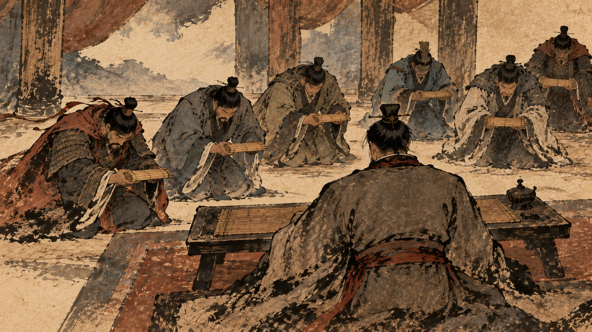
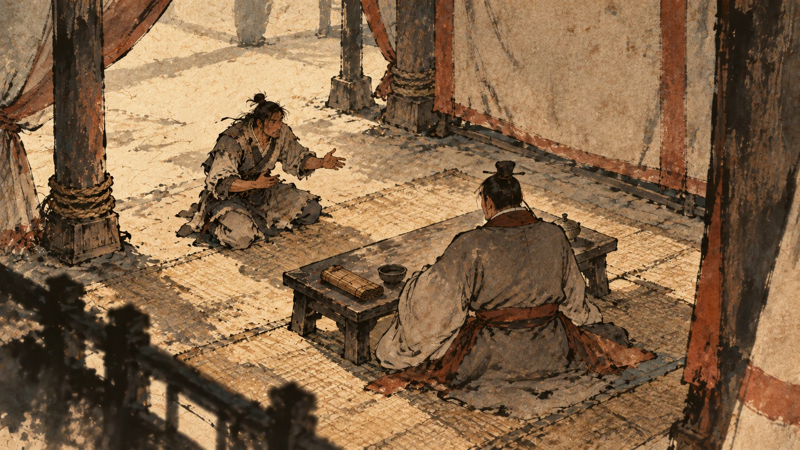
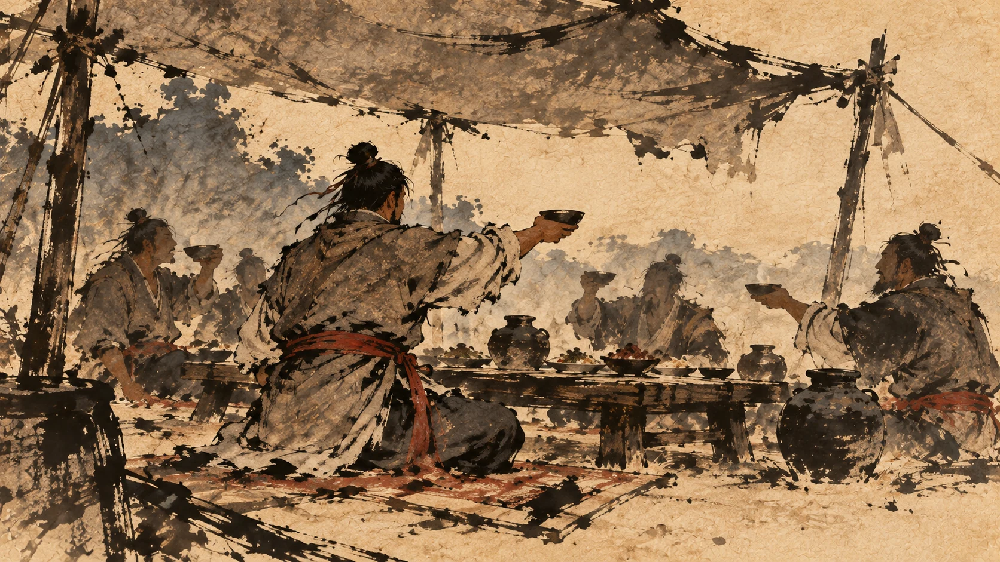
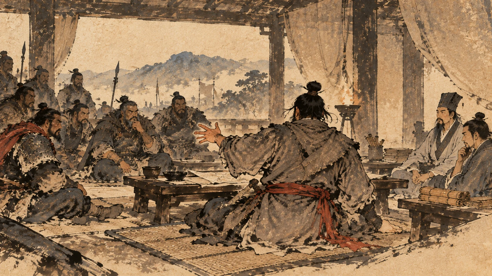
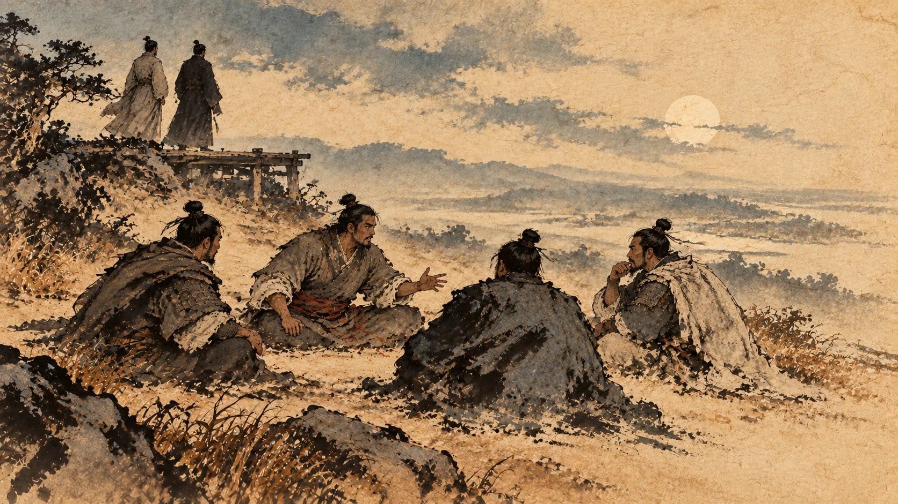
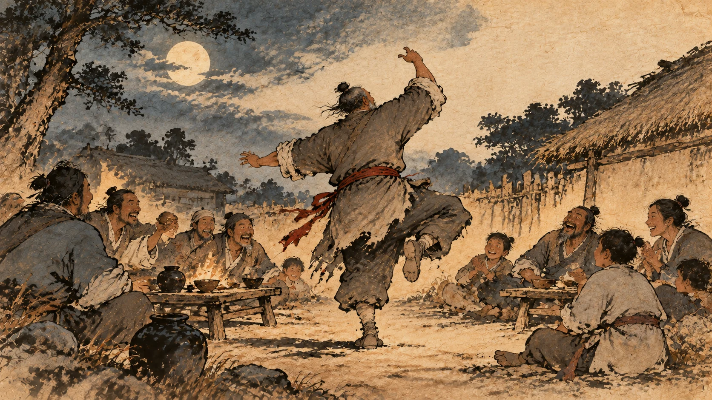
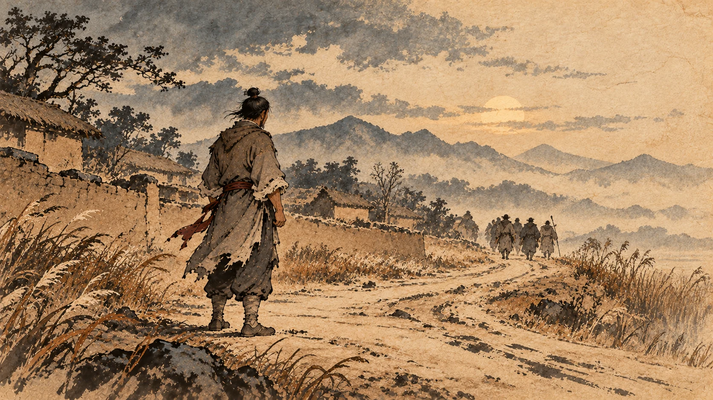

氾水之阳：一个亭长成了皇帝
一、正月的那份奏疏

项羽死后的第二个月，刘邦开始安排天下。
汉五年正月，他做的第一批事是改封：齐王韩信改立为楚王，都城在下邳；彭越封为梁王，都城在定陶。①
然后诸侯们上了一道奏疏。
这道疏是楚王韩信、韩王信、淮南王英布、梁王彭越、原来的衡山王吴芮、赵王张敖、燕王臧荼一起上的。话是这么说的：
先时，秦为亡道，天下诛之。大王先得秦王，定关中，于天下功最多。存亡定危，救败继绝，以安万民，功盛德厚。又加惠于诸侯王有功者，使得立社稷。地分已定，而位号比拟，亡上下之分，大王功德之著，于后世不宣。昧死再拜上皇帝尊号。
从前秦朝无道，天下人一起讨伐它。大王先取得秦王，平定关中，在天下功劳最多。保存将亡的、安定危险的、接续断绝的，让万民安宁，功劳大、恩德厚。又施恩于有功的诸侯王，使我们能立社稷。地已经分定，可是大王的位号跟大家一样，没有上下的分别；大王显著的功德，没法在后世彰显。我们冒着死罪，再拜奉上皇帝的尊号。②
刘邦的回答是这样的：
寡人闻帝者贤者有也，虚言亡实之名，非所取也。今诸侯王皆推高寡人，将何以处之哉？
我听说“帝”这个位号，该归贤德的人；徒有其名而无其实的名号，我不会接受。现在诸侯王都抬高我，我该怎么处理这件事？③
诸侯们又劝了一轮，说：大王起于细微，灭乱秦，威动海内……居帝位甚实宜，愿大王以幸天下。
大王从低微起步，灭了乱秦，威动海内……居帝位实在合适，希望大王为天下人接受它。
然后刘邦说了最后一句话：诸侯王幸以为便于天下之民，则可矣。
诸侯王既然认为这样对天下百姓有利，那就这样吧。④
“便于天下之民”——他接受皇帝这个位号的理由，是说给天下人听的。
这个回答了第八章的一个问题。项羽当年分天下，靠的是“灭秦出力的该分地”；刘邦这里接受帝号，靠的是“这样对天下百姓有利”。两种说法，两种政治。
二、氾水之阳
于是诸侯王和太尉长安侯卢绾等三百人，加上博士叔孙通，挑了个好日子。
二月甲午，汉王即皇帝位于氾水之阳。
汉王在氾水的北岸即皇帝位。
然后是几道追封：王后称皇后，太子称皇太子。⑤
还有一道：追尊先媪曰昭灵夫人。
尊他的母亲为昭灵夫人。⑥
这里要停一下。
“先媪”这三个字，第三章里出现过：刘邦的档案上写着“父曰太公，母曰刘媪”——“刘媪”不是名字，是“刘家老太太”的意思。史料里这位老太太连个名字都没有。
现在她是昭灵夫人了。
八年前，这个人在骊山路上放走了一批人，说“公等皆去，吾亦从此逝矣”，身后跟着十几个人。
八年后，他在氾水北岸当了皇帝。中间隔着七十多场仗、几十万人的命，和一堆已经回不来的旧人。
三、定都：两个地方，两个理由

新朝廷的第一个大决定是：都城放哪儿。
刘邦一开始定的是洛阳。《汉书》写当时的意见分布：左右大臣皆山东人，多劝上都雒阳。
身边的大臣大多是关东人，大多劝他定都洛阳。他们给的理由是：雒阳东有成皋，西有殽黾，倍河，向伊雒，其固亦足恃。
洛阳东边有成皋，西边有崤山、渑池，背靠黄河，面对伊水、洛水，这地势也够可靠了。⑦
注意这四个字的用法——“皆山东人”。这些大臣的老家都在关东，定都洛阳，离自己家近。
这时候有一个人求见，是个戍卒，叫娄敬。
一个去戍边的士兵，路上求见皇帝。他说的话很直：陛下取天下与周异，而都雒阳，不便，不如入关，据秦之固。
陛下取天下的方式跟周朝不一样，而定都洛阳不方便，不如进关中，占据秦地原来的险固。⑧
刘邦拿不定主意，去问张良。
张良的回答是这段争论的结论：
雒阳虽有此固，其中小，不过数百里，田地薄，四面受敌，此非用武之国也。夫关中左殽函，右陇蜀，沃野千里，南有巴蜀之饶，北有胡苑之利，阻三面而守，独以一面东制诸侯。诸侯安定，河渭漕輓天下，西给京师；诸侯有变，顺流而下，足以委输。此所谓金城千里，天府之国也，刘敬说是也。
洛阳虽然有这些险要，可中间小，不过几百里，土地贫薄，四面受敌，不是用武的地方。关中东边有崤山、函谷，西边有陇、蜀，沃野千里；南边有巴蜀的富饶，北边有胡地牧场的利益；三面有险可守，只用一面向东控制诸侯。诸侯安定时，黄河、渭水可以把天下的粮转运来供给京师；诸侯有事，顺流而下足够运送物资。这就是所谓“金城千里，天府之国”，娄敬说得对。⑨
《史记》接着写了四个字：於是高帝即日驾，西都关中。
高帝当天就起驾，往西定都关中。⑩
“即日”这两个字，比这一段里的任何一句话都值钱。
刘邦听完道理，判断是对的，当天就走——没有开会、没有让大臣再议、没有“容朕三思”。
顺便交代一句娄敬的下场：他被拜为奉春君，赐姓刘。⑪
四、雒阳南宫那场酒

称帝之后，刘邦在洛阳南宫请了一次酒。
酒桌上他问了一个问题，这个问题他显然是认真问的：
列侯诸将无敢隐朕，皆言其情：吾所以有天下者何？项氏之所以失天下者何？
列侯、诸将，不许瞒我，都说说实情：我为什么能得到天下？项氏为什么失去天下？⑫
高起、王陵的回答是这样的：
陛下嫚而侮人，项羽仁而敬人。然陛下使人攻城略地，所降下者，因以与之，与天下同利也。项羽妒贤嫉能，有功者害之，贤者疑之，战胜而不与人功，得地而不与人利，此其所以失天下也。
陛下傲慢、爱侮辱人；项羽仁厚、待人恭敬。可是陛下派人攻城略地，打下来的地方就分给他们，跟天下人同利。项羽嫉妒贤能，有功的被他害，有才的被他疑；仗打赢了不给功，地拿到了不给利——这就是他失去天下的原因。⑬
刘邦说：公知其一，未知其二。
你们知道一条，不知道另一条。
然后他讲了那段被引用了两千年的话：
夫运筹帷幄之中，决胜千里之外，吾不如子房；填国家，抚百姓，给饷馈，不绝粮道，吾不如萧何；连百万之众，战必胜，攻必取，吾不如韩信。三者皆人杰，吾能用之，此吾所以取天下者也。项羽有一范增而不能用，此所以为我禽也。
在营帐里筹划、在千里之外决定胜负，我不如张良；治理国家、安抚百姓、供给军饷、使粮道不断，我不如萧何；统率百万大军、战必胜攻必取，我不如韩信。这三个人都是人杰，我能用他们——这是我取得天下的原因。项羽有一个范增却不能用，这就是他为什么被我擒住。⑭
群臣听了，都服了。
这段话里有四个“吾不如”。
你回头看这本书：鸿门宴前夜他问“为之奈何”；第八章在南郑他承认自己被“迁”；第九章他对韩信说“不如也”；这是第四次。
一个人连着四次说自己不行，然后他想说的事才立得住。
王陵说的“跟天下人同利”，和刘邦说的“我能用人”，其实是同一件事的两面：你得舍得把东西给出去，人人才跟你走。
五、封功臣那一年

打赢天下之后，麻烦才真正开始。
《史记》写得很实在：群臣争功，岁余功不决。
群臣争功，争了一年多还没定下来。⑮
刘邦定的第一个是萧何。他把萧何封为酂侯，给的食邑最多。
武将们不干了，说的话很直接：
臣等身被坚执锐，多者百余战，少者数十合，攻城略地，大小各有差。今萧何未尝有汗马之劳，徒持文墨议论，不战，顾反居臣等上，何也？
我们身上披甲、手里拿兵器，多的打了一百多仗，少的也有几十次交手，攻城略地各有大小功劳。萧何从没有过汗马之劳，只是拿着笔墨发议论，没有打过仗，反倒排在我们前面，为什么？⑯
刘邦没有跟他们吵。他问了一句：诸君知猎乎？诸位知道打猎吗？
大家说：知道。
知猎狗乎？知道猎狗吗？
大家说：知道。
然后刘邦说：
夫猎，追杀兽兔者狗也，而发踪指示兽处者人也。今诸君徒能得走兽耳，功狗也。至如萧何，发踪指示，功人也。且诸君独以身随我，多者两三人。今萧何举宗数十人皆随我，功不可忘也。
打猎的时候，追捕野兽兔子的是狗；而发现踪迹、指出野兽在哪儿的，是人。诸位只能得到跑掉的野兽——这是“功狗”。至于萧何，是发现踪迹、指示方向的人——这是“功人”。再说诸位只是自己一个人跟着我，多的也就两三个人；而萧何是带着全族几十个人跟着我，这份功劳不能忘。⑰
群臣皆莫敢言。没有人再敢说话。
“功狗”这个词，是刘邦当着满朝武将说的。这些人刚从战场上回来——比如曹参，身上有七十处伤——被自己的皇帝比成了狗。
我读这一段的时候一直在想：刘邦为什么敢这么说？
答案可能在八年前。那时候他手上有十几个人，后来一百人，后来二三千人。这些人跟着他，是因为他能给出别人给不了的东西：一个亭长出身的逃犯，居然真的把天下打下来了。
他的底气不是他敢说，是这些人离不开他。
六、那场差点发生的兵变

封赏的公平问题很快就烧起来了。
《史记》记了这一幕，写得很像一场戏：
上已封大功臣二十余人，其余日夜争功不决。上在雒阳南宫，从复道望见诸将往往相与坐沙中语。
刘邦已经封了二十多个大功臣，其余的日夜争功定不下来。刘邦在洛阳南宫，从阁道上望见那些将领常常坐在沙地上聚在一起说话。⑱
他问张良：此何语？他们在说什么？
张良说：陛下不知乎？此谋反耳。
陛下不知道吗？这是在商量造反。
刘邦说：天下属安定，何故反乎？
天下刚刚安定，为什么要造反？
张良的解释是这一章里最锋利的一段：
陛下起布衣，以此属取天下，今陛下为天子，而所封皆萧、曹故人所亲爱，而所诛者皆生平所仇怨。今军吏计功，以天下不足遍封，此属畏陛下不能尽封，恐又见疑平生过失及诛，故即相聚谋反耳。
陛下出身布衣，靠这些人取得天下；现在陛下做了天子，封的都是萧何、曹参这些老朋友和您亲近的人，杀的都是您平生恨过的人。现在军中官吏计算功劳，觉得天下的地不够封遍所有人；这些人怕陛下不能把所有人都封到，又怕因为从前的过失被猜疑、被杀——所以就聚在一起商量造反了。⑲
刘邦发愁了，问：为之奈何？
张良问了他一个问题：上平生所憎，群臣所共知，谁最甚者？
陛下平生最恨、而且群臣都知道的人，是谁？
刘邦的回答是这一章我最喜欢的一句：
雍齿与我故，数尝窘辱我。我欲杀之，为其功多，故不忍。
雍齿跟我有旧怨，好几次羞辱过我。我想杀他，因为他功劳多，不忍心。⑳
雍齿。
第四章里那个背叛了他、把他自己的老家丰邑占了的雍齿。
张良说：今急先封雍齿以示群臣，群臣见雍齿封，则人人自坚矣。
现在赶紧先把雍齿封了给大家看——群臣看见雍齿都封了，每个人就都踏实了。㉑
于是刘邦摆酒，封雍齿为什方侯，同时催丞相、御史赶紧把功劳排出来封人。
群臣散席之后，都很高兴，说了一句话：雍齿尚为侯，我属无患矣。
雍齿都封了侯，我们还担心什么。㉒
刘邦恨雍齿是真恨。这句话是他自己说的，“我欲杀之”——只是不忍心。
而张良的办法是：把最恨的那个人第一个封了。
这一手，跟他在鸿门宴上替刘邦挡剑、在第四章里跟刘邦结儿女亲家是同一种本事——把人情算清楚，然后用在最需要的地方。
七、封张良
封赏里头，张良这一份有点特别。
《史记》写：良未尝有战斗功。
张良一直没有战功——这一点前面说过，他身体不好，从来没单独带过兵。
刘邦给的是：运筹策帷帐中，决胜千里外，子房功也。自择齐三万户。
在营帐里筹划、在千里之外决定胜负，这是子房的功劳。你自己在齐地挑三万户吧。
张良的回答是：
始臣起下邳，与上会留，此天以臣授陛下。陛下用臣计，幸而时中，臣愿封留足矣，不敢当三万户。
我当初在下邳起事，跟陛下在留县相遇，这是上天把我交给陛下。陛下用我的计策，侥幸常常应验；我希望封在留县就够了，不敢当三万户。㉓
于是刘邦封他为留侯。
“留”是他跟刘邦第一次见面的地方。第十章里那个场景：张良本来要去投景驹，路上遇到了刘邦，跟他说兵法，别人都听不懂，刘邦听得懂。
三万户不要，要一个纪念。这就是张良这个人一辈子做选择的风格。
八、八年之后，他回了沛县

称帝之后又过了七年，发生了一件事。
汉十二年冬天，刘邦打败了叛乱的黥布，回来的路上，经过沛县。
《汉书》写：上还，过沛，留，置酒沛宫，悉召故人父老子弟佐酒。
刘邦回来，经过沛县，留下来，在沛宫摆酒，把老朋友、父老、子弟全都请来陪酒。㉔
然后他做了一件事：发沛中儿得百二十人，教之歌。
找来沛县的孩子一百二十个，教他们唱歌。
酒喝到酣处，刘邦击筑——一种用竹尺敲击的弦乐器——自己唱了一首三句的歌：
大风起兮云飞扬，威加海内兮归故乡，安得猛士兮守四方！
大风刮起来，云随着翻涌；我的威势加到海内，如今回到故乡；哪里去找猛士，替我守住四方！㉕
《汉书》接着写：令儿皆和习之。上乃起舞，忼慨伤怀，泣数行下。
他让那一百二十个孩子跟着唱、跟着练。他自己起身跳舞，慷慨伤怀，流下几行泪。㉖
然后他对沛县的父兄说了这些话：
游子悲故乡。吾虽都关中，万岁之后吾魂魄犹思沛。且朕自沛公以诛暴逆，遂有天下，其以沛为朕汤沐邑，复其民，世世无有所与。
在外的人思念故乡。我虽然定都关中，死后我的魂魄还是想沛县。况且我是从“沛公”这个名号开始诛除暴逆、取得天下的——把沛县作为我的汤沐邑，免除这里百姓的赋税，世世代代不用缴纳。㉗
那十几天里，沛县的父老和老朋友们天天喝酒，极尽欢乐，讲旧事、开玩笑。
刘邦要走，沛县的父兄硬留。他说：吾人众多，父兄不能给。
我带来的人多，父兄们供不起。
他走了。沛县空了城，大家都到城西去献东西。刘邦留下来，又摆酒喝了三天。㉘
然后沛县的父兄都磕头说：沛幸得复，丰未得，唯陛下哀矜。
沛县有幸免了赋税，丰邑还没有，请陛下哀怜。
刘邦的回答是这本书里他最后一次提到雍齿：
丰者，吾所生长，极不忘耳。吾特以其为雍齿故反我为魏。
丰邑是我出生长大的地方，我一点都没有忘。我只是恨它当年因为雍齿的缘故反我、归了魏。㉙
沛县的父兄一直求，他终于答应：并复丰，比沛。
丰邑也免除赋税，跟沛县一样。㉚
全书到这里，最后一块拼图才落下来。
第一章那个地方叫“沛县丰邑中阳里”——他的老家就是丰邑，中阳里就在丰邑。第四章里，丰邑的人跟着雍齿反了他，他打不下来，病了一场，退回沛县。这个恨他记了很多年，记到当了皇帝都没忘。
而最后他还是把丰邑的赋税免了。
九、这本书停在这里

我把这本书的最后一句话放在这儿，不讲道理，只讲事实。
八年前，他在骊山路上把一批人放走，说了六个字：吾亦从此逝矣。那时候他身后跟着十几个人。
八年后，他站在氾水的北岸当了皇帝。
又过了七年，他回到沛县，找来一百二十个孩子教他们唱歌，自己在酒席上击筑唱了三句，唱完哭了。
从起兵到称帝，八年。从称帝到回到沛县，七年。
他的天下才刚立起来，后面还有两百年的西汉。
而这本书要讲的那一段——从秦末到汉朝建立——到这儿就完了。
（有一件事得说在明处：他唱这首歌的时候，韩信和彭越都已经在头一年死了。这两个人是怎么死的，是另一段故事，这本书没有写。留在这一句里，是因为读到这里的人应该知道。）
下一部如果写下去，那就是汉朝自己的事了。